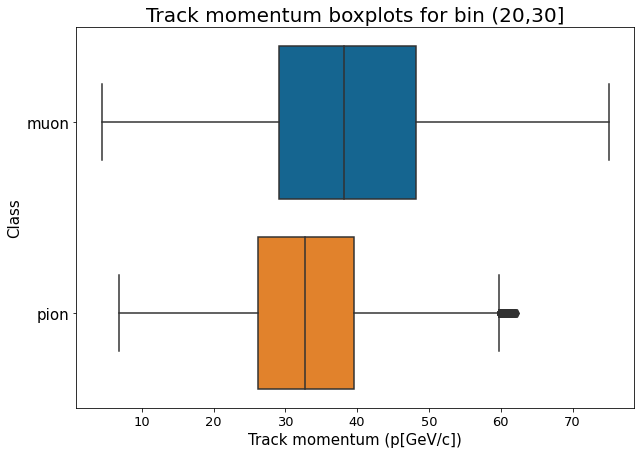
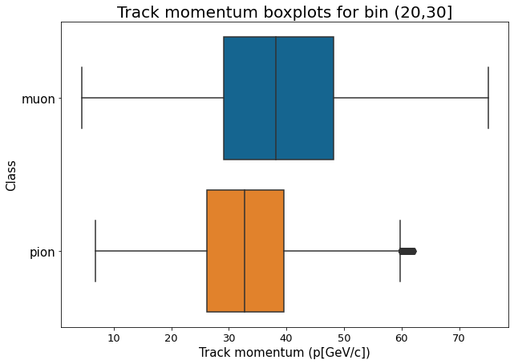
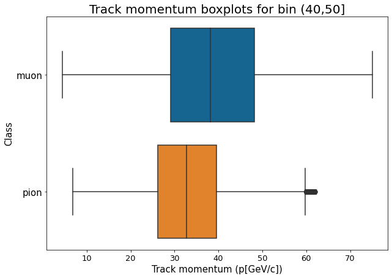
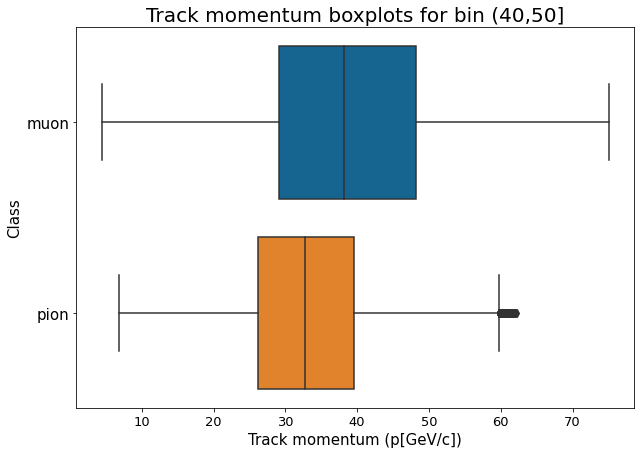

Exploratory data analysis
Contents
Exploratory data analysis#
Purpose: The purpose of this notebook is to perform exploratory data analysis on the RICH AI Dataset.
Authors: Mukund Iyer, Nico Van den Hooff, Shiv Jena
Notes:
Labels are 0: Muon, 1: Pion, 2: Positron
Likelihood labels are different [Pion, Muon, Positron]
import h5py
import numpy as np
import pandas as pd
import os
import seaborn as sns
import matplotlib.pyplot as plt
import sys
import glob
cd ../
/home/mukund/richai
Helper functions#
def read_RICHAI_data(file_paths):
"""Read in all the 2018 RICHAI data
Parameters
----------
file_paths : list of str
List of file paths of all data sets.
Returns
-------
data_files : dict
Dictionary of HFD data sets
"""
data_files = {}
for file_path in file_paths:
if file_paths[0].split("/")[1]=="fast_scratch_1":
name = file_path.split("/")[4].split(".")[0] + "/" + file_path.split("/")[4].split(".")[1]
else:
name = file_path.split("/")[4] + "/" + file_path.split("/")[5].split(".")[0]
patch_check=file_path.split("/")[5].split(".")[2]
if len(patch_check.split("_")) == 2:
name=name + '_' + patch_check.split('_')[1]
data_files[name] = h5py.File(file_path)
return data_files
def events_to_pandas(dfile):
"""Convert HDF5 events data to Pandas
Parameters
----------
dfile : HDF5 file
The RICHAI HDF5 file to convert to pandas.
Returns
-------
df : pd.DataFrame
pandas DataFrame with Events data
"""
df = pd.DataFrame()
# event features
df["run_id"] = dfile["Events"]["run_id"]
df["burst_id"] = dfile["Events"]["burst_id"]
df["event_id"] = dfile["Events"]["event_id"]
df["track_id"] = dfile["Events"]["track_id"]
df["track_momentum"] = dfile["Events"]["track_momentum"]
df["chod_time"] = dfile["Events"]["chod_time"]
df["ring_radius"] = dfile["Events"]["ring_radius"]
df["ring_centre_pos_x"] = dfile["Events"]["ring_centre_pos"][:, 0]
df["ring_centre_pos_y"] = dfile["Events"]["ring_centre_pos"][:, 1]
df["ring_likelihood_pion"] = dfile["Events"]["ring_likelihood"][:, 0]
df["ring_likelihood_muon"] = dfile["Events"]["ring_likelihood"][:, 1]
df["ring_likelihood_positron"] = dfile["Events"]["ring_likelihood"][:, 2]
# labels
mu_off = dfile.attrs["muon_offset"]
pi_off = dfile.attrs["pion_offset"]
pos_off = dfile.attrs["positron_offset"]
entries = dfile.attrs["entries"]
labels = np.zeros(entries, dtype=np.int32)
labels[mu_off:pi_off] = 0
labels[pi_off:pos_off] = 1
labels[pos_off:] = 2
df["label"] = labels
# hit mapping values
df["first_hit"] = np.array(dfile["HitMapping"])[:-1] # hit n
df["last_hit"] = np.array(dfile["HitMapping"])[1:] # hit n + 1
df["total_hits"] = df["last_hit"] - df["first_hit"]
return df
def get_string_label(label):
"""Add string label to pandas df (to be used with map)"""
if label == 0:
return "muon"
elif label == 1:
return "pion"
elif label == 2:
return "positron"
def compute_seq_id(hit, or_id=0):
"""Compute the RICH PMT sequence ID"""
disk_id, pm_id, sc_id, up_dw_id, _ = hit
if or_id < 1:
seq_id = sc_id * 8 + pm_id + up_dw_id * 61 * 8 + disk_id * 61 * 8 * 2
else:
seq_id = 61 * 8 * 2 * 2 + sc_id + up_dw_id * 61 + disk_id * 61 * 2
return int(seq_id)
compute_seq_id = np.vectorize(compute_seq_id, otypes=[int])
def realign_x_hits(x, mirror):
if mirror == 0:
return x - 146.8
else:
return x + 196.7
def realign_y_hits(y, mirror):
if mirror == 0:
return y - 19.8
else:
return y - 9.5
def get_hit_info_df(f, df, event):
"""Get the hit info for an event in a pandas dataframe
Parameters
----------
f : HDF5 file
The RICHAI HDF5 file.
df : pandas DataFrame
A pandas DataFrame representation of the HDF5 Events file.
event : int
The event number to get the hit info for.
Returns
-------
positions : pd.DataFrame
pandas DataFrame with hits data for a given event
"""
positions = []
# get our hit data for this event
idx_from = df.loc[event]["first_hit"]
idx_to = df.loc[event]["last_hit"]
hit_data = f["Hits"][idx_from:idx_to]
# get our pm locations for this event
for hit in hit_data:
pm_idx = compute_seq_id(hit)
positions.append(position_map[pm_idx])
# add hit time, chod time, and delta
positions = pd.DataFrame(positions, columns=["x", "y", "mirror"])
positions["x_realigned"] = positions.apply(lambda a: realign_x_hits(a.x, a.mirror), axis=1)
positions["y_realigned"] = positions.apply(lambda a: realign_y_hits(a.y, a.mirror), axis=1)
positions["hit_time"] = hit_data["hit_time"]
positions["chod_time"] = df["chod_time"][event]
positions["chod_delta"] = positions["hit_time"] - positions["chod_time"]
positions["class"] = df["class"][event]
positions["event"] = event
return positions
def draw_pmt_pos(ax,pmt_pos):
"""
Add circle patches corresponding to the PMT position to the Axes object ax
"""
for i in pmt_pos:
if i[2] == 0: # 0: Jura / 1: Salève, PMT disks are identical, we can pick either one. [TODO: CHECK!]
ax.add_patch(plt.Circle((i[0],i[1]),1.0, color='black'))
return ax
def get_class_samples(df, n, seed, momentum_bin=None, wide=None):
"""Sample n samples for each particle class from the events dataframe"""
if momentum_bin and wide:
df = df.query("wide_momentum_bin == @momentum_bin")
if momentum_bin and not wide:
df = df.query("narrow_momentum_bin == @momentum_bin")
samples = pd.concat(
[
df[df["class"] == "muon"].sample(n=n, random_state=seed),
df[df["class"] == "pion"].sample(n=n, random_state=seed),
# df[df["class"] == "positron"].sample(n=n, random_state=seed)
]
)
return samples
def get_string_label(label):
"""Add string label to pandas df (to be used with map)"""
if label == 0:
return "muon"
elif label == 1:
return "pion"
#elif label == 2:
# return "positron"
def undersample(df):
classes = df.label.value_counts().to_dict()
least_class_amount = min(classes.values())
classes_list = []
for key in classes:
classes_list.append(df[df['label'] == key])
classes_sample = []
for i in range(0,len(classes_list)-1):
classes_sample.append(classes_list[i].sample(least_class_amount))
df_maybe = pd.concat(classes_sample)
final_df = pd.concat([df_maybe,classes_list[-1]], axis=0)
final_df = final_df.reset_index(drop=True)
return final_df
def delta(
dset_unbalanced,
df_balanced,
delta = 0.3
):
"""extra delta stats"""
# Event indices in balanced dataset
event_nums = df_balanced['original_index']
# Defining total_hits_filtered
hits_filtered_perevent = pd.Series(np.zeros(df_balanced.shape[0], dtype='int32'), index=event_nums,dtype='int32')
delta_perevent = pd.Series(np.zeros(df_balanced.shape[0], dtype='int32'), index=event_nums,dtype='int32')
for event_idx in event_nums:
# Finding the number of hits for each event in the hit_array from hit_mapping
idx_from = dset_unbalanced.hit_mapping[event_idx]
idx_to = dset_unbalanced.hit_mapping[event_idx+1]
hit_times = dset_unbalanced.hit_array['hit_time'][idx_from:idx_to]
# Extracting delta for each event
delta_time = dset_unbalanced.event_array[event_idx]["chod_time"] - hit_times
# Fetching the count of hit_times in the range hit_time +- delta_tolerance
hits_filtered_perevent[event_idx] = delta_time[np.abs(delta_time) > delta].shape[0]
delta_perevent[event_idx] = np.mean(delta_time[np.abs(delta_time) < delta])
# updating df_balanced for total hits
df_balanced_copy = df_balanced
df_balanced_copy['hits_filtered_per_event'] = hits_filtered_perevent
df_balanced_copy['mean_delta'] = delta_perevent
print(delta_time)
return df_balanced_copy
Helper functions for plotting Rings#
def get_hit_data(f, mapper, mapper_event):
"""Get the hit data for an event as a numpy array."""
event=mapper['data']['table'][mapper_event][3][1]
hit_data = []
# get the raw hit data, hit time, and chod time
hits = f["Hits"][
f["HitMapping"][event]:f["HitMapping"][event+1]
]
hit_times = hits["hit_time"]
chod_time = f["Events"][event]["chod_time"]
# compute (x, y) positions
for hit in hits:
idx = compute_seq_id(
hit
)
hit_data.append(position_map[idx])
# convert (x, y) positions to numpy array
hit_data = np.array(hit_data)
# create array of chod times
chod_time = np.full((hit_data.shape[0], 1), chod_time)
# join hits, hit times, and chod time
hit_data = np.c_[hit_data, hit_times, chod_time]
# create CHOD - time delta column
hit_data = np.append(hit_data, hit_data[:, 4:] - hit_data[:, 3:4], axis=1)
# final columns are x, y, mirror, hit time, chod time, delta
return hit_data
def hit_data_to_pandas(hit_data):
"""Convert numpy array hits data to pandas format"""
return pd.DataFrame(
data=hit_data,
columns=["x", "y", "mirror", "hit_time", "chod_time", "time_delta"]
)
def realign_x_hits(x, mirror):
"""Realign x hits based on mirror"""
if mirror == 0:
return x - 146.8
else:
return x - 196.7
def realign_y_hits(y, mirror):
"""Realign y hits based on mirror"""
if mirror == 0:
return y - 19.8
else:
return y - 9.5
def plot_event(f, mapper, mapper_event, ax=None):
# get the hit data for the event
hit_data = get_hit_data(f, mapper, mapper_event)
event=mapper['data']['table'][mapper_event][3][1]
# labels
mu_off = f.attrs["muon_offset"]
pi_off = f.attrs["pion_offset"]
pos_off = f.attrs["positron_offset"]
entries = f.attrs["entries"]
labels = np.zeros(entries, dtype=np.int32)
labels[mu_off:pi_off] = 0
labels[pi_off:pos_off] = 1
#labels[pos_off:] = 2
# convert data to pandas to make plotting code more readable
hit_data_df = hit_data_to_pandas(hit_data)
# realign x and y hits
hit_data_df["x_realigned"] = hit_data_df.apply(
lambda a: realign_x_hits(a.x, a.mirror), axis=1
)
hit_data_df["y_realigned"] = hit_data_df.apply(
lambda a: realign_y_hits(a.y, a.mirror), axis=1
)
# get values for title
radius = f["Events"][event]['ring_radius']
momentum = f["Events"][event]['track_momentum']
centre_x, centre_y = f["Events"][event]['ring_centre_pos']
label = labels[event]
# determine which mirror was hit
if (hit_data[:, 2:3] == 0).all():
mirror = "Jura"
elif (hit_data[:, 2:3] == 1).all():
mirror = "Saleve"
else:
mirror = "Both"
if not ax:
fig = plt.figure(figsize=(7, 7))
ax = fig.subplots()
# plot realigned hits
im = ax.scatter(
x=hit_data_df["x_realigned"],
y=hit_data_df["y_realigned"],
# c=hit_data_df["time_delta"],
c=np.power(hit_data_df["time_delta"], 2),
# c=np.abs(hit_data_df["time_delta"]),
cmap="cividis",
vmin = 0, vmax=30
)
if label == 0:
color = "#1170aa"
elif label == 1:
color = "#fc7d0b"
#elif label == 2:
# color = "#a3acb9"
# plot the circle
ax.add_artist(
plt.Circle((centre_x, centre_y), radius, fill=False,color=color)
)
# add a colourbar
cbar = plt.colorbar(im, shrink=0.5, ax=ax)
# other customizations
ax.set_title(
f"""Event: {event}, Mirror:{mirror}
Radius: {radius:.2f}, Momentum: {momentum:.2f}
Centre ({centre_x:.2f}, {centre_y:.2f})
Label: {label}"""
)
ax.set_xlabel('X (mm)')
ax.set_ylabel('Y (mm)')
ax.set_aspect('equal')
ax.set_xlim(-500,500)
ax.set_ylim(-500,500)
return ax
Read in data files#
file_paths = glob.glob("/data/bvelghe/capstone2022/*/*")
data_files = read_RICHAI_data(file_paths)
data_files.keys()
dict_keys(['A/Run008563', 'A/Run008548', 'A/Run008564', 'A/Run008553', 'A/Run008562', 'C/2018E', 'C/2018E_patched', 'B/2018B'])
file_paths_combined = glob.glob("/fast_scratch_1/capstone_2022/combined_datasets/*")
data_files_balanced = read_RICHAI_data(file_paths_combined)
data_files_balanced.keys()
dict_keys(['B/2018B', 'A/Run008553', 'A/Run008564', 'A/Run008548', 'C/2018E', 'A/Run008562', 'A/Run008563'])
f = data_files['C/2018E_patched']
f.keys()
<KeysViewHDF5 ['Events', 'HitMapping', 'Hits']>
f_balanced=data_files_balanced['C/2018E']
position_map = np.load("/home/nico/RICHPID/tools/rich_pmt_positions.npy")
position_map.shape
(1952, 3)
from dataset.rich_dataset import *
dset_path = "/data/bvelghe/capstone2022/C/2018E.EOSlist.CTRL_patched.h5"
dset_unbalanced = RICHDataset(
dset_path
)
2022-06-27 22:34:57,735 INFO data_version: 5f0df761-9a34-4554-9c50-dc0b338dc19a
2022-06-27 22:34:57,738 INFO description: NA62 RICH PID dataset - MDS Capstone project - Thu 26 May 2022 09:33:42 AM CEST <bob.velghe@triumf.ca>
2022-06-27 22:34:57,739 INFO entries: 9662769
2022-06-27 22:34:57,740 INFO muon_offset: 0
2022-06-27 22:34:57,741 INFO pion_offset: 8583495
2022-06-27 22:34:57,742 INFO positron_offset: 9567650
2022-06-27 22:34:58,613 INFO hit map size: 77302160 bytes
2022-06-27 22:34:58,616 INFO Offsets: {'entries': 9662769, 'muon': 0, 'pion': 8583495, 'positron': 9567650}
2022-06-27 22:34:58,643 INFO Entries: 9662769
2022-06-27 22:34:58,644 INFO Muons start at index: 0
2022-06-27 22:34:58,644 INFO Pions start at index: 8583495
2022-06-27 22:34:58,645 INFO Positron start at index: 9567650
2022-06-27 22:34:58,697 INFO
Mean centre locations: (-110.25,1.14)
Mean/std momentum: 31.338661, 7.523443
Mean/std radius: 174.97235, 12.013085
2022-06-27 22:34:59,001 INFO Total indices: 9662767
2022-06-27 22:34:59,003 INFO Total Train indices: 0
2022-06-27 22:34:59,004 INFO Total Validation indices: 0
2022-06-27 22:34:59,005 INFO Total Test indices: 0
2022-06-27 22:34:59,005 INFO First 5 Train indices: []
2022-06-27 22:34:59,006 INFO First 5 Validation indices: []
2022-06-27 22:34:59,006 INFO First 5 Test indices: []
2022-06-27 22:34:59,007 INFO hit array mmap size: 6921200020 bytes
2022-06-27 22:34:59,008 INFO event array mmap size: 695719368 bytes
Create Events pandas DataFrame#
df = events_to_pandas(f)
# add class label (text)
df["class"] = df["label"].apply(get_string_label)
# add wide momentum bin
wide_momentum_bins = ['(0,10]', '(10,20]', '(20,30]', '(30,40]','(40,50]']
df["wide_momentum_bin"] = pd.cut(
df["track_momentum"],
[0, 10, 20, 30, 40, 50],
labels=wide_momentum_bins
)
# add narrow momentum bin
narrow_momentum_bins = []
for i in range(0, 40):
narrow_momentum_bins.append((i, i+1))
narrow_momentum_bins.append((40, np.inf))
df["narrow_momentum_bin"] = pd.cut(
df["track_momentum"],
pd.IntervalIndex.from_tuples(narrow_momentum_bins),
labels=[f"({b[0]}, {b[1]}]" for b in narrow_momentum_bins]
)
df.shape
df=df[df['label']!=2]
#removing positrons and undersampling pions
df_bi=df[(df['label']!=2)]
df_bi['original_index']=df_bi.index
#creating sub-samples for each bin
wide_momentum_bins = ['(0,10]', '(10,20]', '(20,30]', '(30,40]','(40,50]']
balanced_df_wide={}
for i in wide_momentum_bins:
balanced_df_wide[i]=undersample(df_bi[df_bi['wide_momentum_bin']==i])
#combining dfs under each bin
balanced_df_combined=pd.concat(balanced_df_wide, ignore_index=True)
#creating a smaller df with n=10000 samples under each bin
df_small={}
for key, value in balanced_df_wide.items():
n_examples=int(value.shape[0]/2)
if n_examples>30000:
n=10000
else:
n=n_examples
df_small[key]=get_class_samples(value, n, seed=42)
df_small_combined=pd.concat(df_small.values(), ignore_index=True)
# this matches Bob's documentation on https://github.com/TRIUMF-Capstone2022/RICHPID/tree/main/docs
print(f'The class counts in the original dataset are: \n{df["class"].value_counts()} \n\nThe class counts in the synthetic dataset are: \n{balanced_df_combined["class"].value_counts()}'
)
The class counts in the original dataset are:
muon 8583495
pion 984155
Name: class, dtype: int64
The class counts in the synthetic dataset are:
muon 948838
pion 948838
Name: class, dtype: int64
Plot settings#
plt.style.use('tableau-colorblind10')
plt.rcParams["patch.force_edgecolor"] = True
# line styles for positron, pion, muon
lss = ['dashed', 'dashdot', "dotted"]
Plots: Event Data#
Track momentum#
Momentum histograms - Bins = 1 GeV#
Muon has the widest range, pion a bit narrower. Positron momentum range is much lower.
Note positron has less data
The bins here are a single GeV
g = sns.displot(
data=df,
x="track_momentum",
col="class",
hue="class",
binwidth=1,
facet_kws=dict(sharey=False),
col_wrap=1,
legend=False
)
g.fig.suptitle("Track momentum histograms", y=1, fontsize=20)
g.set_titles(size=15)
g.set_xlabels("Track momentum (p[GeV/c])", fontsize=13)
g.set_ylabels(fontsize=13)
g.fig.set_figheight(7)
g.fig.set_figwidth(10)
plt.tight_layout()
plt.show()
for key, value in balanced_df_wide.items():
g = sns.displot(
data=value,
x="track_momentum",
#col="class",
hue="class",
binwidth=1,
facet_kws=dict(sharey=False),
#col_wrap=1,
legend=False,
alpha=0.5
)
g.fig.suptitle(f"Track momentum distribution for bin {key}", y=1, fontsize=20)
g.fig.legend(title=f"count={value.label.value_counts()[0]}",
fontsize=15)
g.set_titles(size=15)
g.set_xlabels("Track momentum (p[GeV/c])", fontsize=13)
g.set_ylabels(fontsize=13)
g.fig.set_figheight(7)
g.fig.set_figwidth(10)
plt.tight_layout()
plt.show()
No artists with labels found to put in legend. Note that artists whose label start with an underscore are ignored when legend() is called with no argument.
No artists with labels found to put in legend. Note that artists whose label start with an underscore are ignored when legend() is called with no argument.
No artists with labels found to put in legend. Note that artists whose label start with an underscore are ignored when legend() is called with no argument.
No artists with labels found to put in legend. Note that artists whose label start with an underscore are ignored when legend() is called with no argument.
No artists with labels found to put in legend. Note that artists whose label start with an underscore are ignored when legend() is called with no argument.
Momentum KDE plot#
fig = plt.figure(figsize=(10, 7))
g = sns.kdeplot(df_bi["track_momentum"], hue=df["class"], common_norm=False, linewidth=2)
plt.title("Track momentum density estimates", fontsize=20)
plt.xlabel("Track momentum (p[GeV/c])", fontsize=15);
plt.ylabel("Density", fontsize=15);
plt.xticks(fontsize=13)
plt.yticks(fontsize=13)
handles = g.legend_.legendHandles[::-1]
for line, ls, handle in zip(g.lines, lss, handles):
line.set_linestyle(ls)
handle.set_ls(ls)
plt.show()
Momentum Boxplots#
plt.figure(figsize=(10, 7))
sns.boxplot(data=df, x="track_momentum", y="class")
plt.title("Track momentum boxplots", fontsize=20)
plt.xlabel("Track momentum (p[GeV/c])", fontsize=15);
plt.ylabel("Class", fontsize=15);
plt.xticks(fontsize=13)
plt.yticks(fontsize=15)
plt.show()
for key, value in balanced_df_wide.items():
plt.figure(figsize=(10, 7))
sns.boxplot(data=df, x="track_momentum", y="class")
plt.title(f"Track momentum boxplots for bin {key}", fontsize=20)
plt.xlabel("Track momentum (p[GeV/c])", fontsize=15);
plt.ylabel("Class", fontsize=15);
plt.xticks(fontsize=13)
plt.yticks(fontsize=15)
plt.show()
 

 

Ring radius#
MLE errors#
counts = df[df["ring_radius"] >= 999999.000].shape[0]
print(f"There are {counts} examples with ring radius 999999")
There are 15587 examples with ring radius 999999
Ring radius histograms - bins = 1 GeV#
Axis limits have been cut off here at > 120mm and < 220mm since this helps show plots better. There is some noise outside of these limits.
df=df_small_combined
g = sns.displot(
data=df,
x=df.query("ring_radius < 999999.000 & label == 0")["ring_radius"],
#col=df.query("ring_radius < 999999.000")["class"],
hue=df.query("ring_radius < 999999.000")["class"],
binwidth=1,
facet_kws=dict(sharey=False),
#col_wrap=1,
legend=False
)
g.fig.suptitle("Distribution of Ring Radius", y=1, fontsize=20)
g.set_titles(size=15)
g.set_xlabels("Ring radius (mm)", fontsize=13)
g.set_ylabels(fontsize=13)
g.fig.set_figheight(6)
g.fig.set_figwidth(15)
#for ax in g.axes:
g.set(xlim=(50,220))
plt.axvline(np.median(df.query("ring_radius < 999999.000 & label == 0")["ring_radius"]),
color="blue",
linestyle="dotted",
label=f"Muon \n median={np.median(df.query('ring_radius < 999999.000 & label == 0')['ring_radius']):.1f}"
)
plt.axvline(np.median(df.query("ring_radius < 999999.000 & label == 1")["ring_radius"]),
color="red",
linestyle="dotted",
label=f"Pion \n median={np.median(df.query('ring_radius < 999999.000 & label == 1')['ring_radius']):.1f}"
)
plt.legend()
plt.tight_layout()
plt.show()

print(f"The median ring radius of muons in the sub-sample is {np.median(df.query('ring_radius < 999999.000 & label == 0')['ring_radius'])}")
The median ring radius of muons in the sub-sample is 180.68023681640625
np.median(df.query("ring_radius < 999999.000 & label == 1")["ring_radius"])
173.40247
Ring Radius KDE Plots#
df=df_small_combined
plt.figure(figsize=(10, 7))
g = sns.kdeplot(
x=df.query("ring_radius < 999999.000")["ring_radius"],
hue=df.query("ring_radius < 999999.000")["class"],
common_norm=False,
)
plt.title("Ring radius density", fontsize=20)
plt.xlabel("Ring radius (mm)", fontsize=15);
plt.ylabel("Density", fontsize=15);
plt.xticks(fontsize=13)
plt.yticks(fontsize=13)
plt.xlim(120, 225)
handles = g.legend_.legendHandles[::-1]
for line, ls, handle in zip(g.lines, lss, handles):
line.set_linestyle(ls)
handle.set_ls(ls)
plt.show()
Distribution of ring radius for momentum bins of 1 GeV post sub-sampling#
df=df_small_combined
g = sns.displot(
data=df.query("ring_radius < 999999.000"),
x="ring_radius",
col="narrow_momentum_bin",
hue="class",
col_wrap=3,
facet_kws=dict(sharey=False, sharex=False),
binwidth=1,
legend=False
);
for ax in g.axes:
ax.set_xlim(100, 225)
g.set_titles("Ring Radius Histogram for Momentums: {col_name}")
g.fig.suptitle("Ring Radius Histogram for Momentums", y=1)
g.tight_layout()
plt.show()
Ring centre locations for each particle post sub-sampling#
Some patterns observed in locations of ring centres, but based on discussion w/ Bob this is biased.
df=df_small_combined
g = sns.displot(
x=df.query("ring_centre_pos_y < 500000.000")["ring_centre_pos_x"],
y=df.query("ring_centre_pos_y < 500000.000")["ring_centre_pos_y"],
#col=df.query("ring_centre_pos_y < 500000.000")["class"],
hue=df.query("ring_centre_pos_y < 500000.000")["class"],
legend=False,
cbar=True,
binwidth=(1, 1)
#col_wrap=1
);
g.fig.set_figheight(7)
g.fig.set_figwidth(10)
g.set_axis_labels("x (mm)", "y (mm)")
g.set_titles("Ring Centres for Label: {col_name}")
g.tight_layout()
g.set(xlim=(-400, 100))
g.set(ylim=(-250, 250))
g.fig.suptitle("Ring Centre Locations for Each Particle", y=1.05)
plt.show()
for key, value in df_small.items():
g = sns.displot(
x=value.query("ring_centre_pos_y < 500000.000")["ring_centre_pos_x"],
y=value.query("ring_centre_pos_y < 500000.000")["ring_centre_pos_y"],
#col=df.query("ring_centre_pos_y < 500000.000")["class"],
hue=value.query("ring_centre_pos_y < 500000.000")["class"],
legend=True,
cbar=True,
binwidth=(1, 1)
#col_wrap=1,
);
g.fig.set_figheight(5)
g.fig.set_figwidth(8)
g.set_axis_labels("x (mm)", "y (mm)")
#g.set_titles("Ring Centres for {col_name}" + f" for bin size {key}")
g.tight_layout()
g.fig.suptitle(f"Ring Centres for bin size {key}", y=1.05)
g.fig.legend(title=f"count={value.label.value_counts()[0]}",
fontsize=15)
plt.show()
No artists with labels found to put in legend. Note that artists whose label start with an underscore are ignored when legend() is called with no argument.
No artists with labels found to put in legend. Note that artists whose label start with an underscore are ignored when legend() is called with no argument.
No artists with labels found to put in legend. Note that artists whose label start with an underscore are ignored when legend() is called with no argument.
No artists with labels found to put in legend. Note that artists whose label start with an underscore are ignored when legend() is called with no argument.
No artists with labels found to put in legend. Note that artists whose label start with an underscore are ignored when legend() is called with no argument.
Track momentum vs. Ring radius#
We can see separation in the plot from about 10GeV to 40 GeV
df=df_small_combined
g = sns.displot(
x=df.query("ring_centre_pos_y < 500000.000")["track_momentum"],
y=df.query("ring_centre_pos_y < 500000.000")["ring_radius"],
hue=df.query("ring_centre_pos_y < 500000.000")["class"],
cbar=True,
binwidth=(0.1, 0.1)
);
g.ax.set_title("Track momentum vs. Ring radius", fontsize=20)
g.set_axis_labels("Track momentum (p[GeV/c])", "Ring radius (mm)", fontsize=15)
g.set_titles("Ring Centres for Label: {col_name}")
g.ax.tick_params(axis='x', labelsize= 14)
g.ax.tick_params(axis='y', labelsize= 14)
g.ax.set_ylim([0, 300]) # some noise above 300 makes the plot ugly
g.fig.set_figheight(8)
g.fig.set_figwidth(8)
g.tight_layout()
plt.axvline(15, color="red", linestyle="dotted")
plt.axvline(45, color="red", linestyle="dotted")
#plt.plot(ptrk_mev/1000, mu_ring_rad*1000, color='r')
#plt.plot(ptrk_mev/1000, pi_ring_rad*1000, color='r')
#plt.show()
<matplotlib.lines.Line2D at 0x7f94f663a1c0>
import sys
import numpy as np
import matplotlib.pyplot as plt
df=df_small_combined.query('ring_radius<3000')
# MeV/c^2
M_PI_MEV = 139.57
M_MU_MEV = 105.66
M_E_MEV = 0.511
# Units conversion
MEV_TO_GEV = 1e-3
M_TO_MM = 1e3
def calc_ring_radius(p,label):
"""
Returns the expected ring radius [m]
m : mass of the particle in MeV/c^2
p : track momentum in MeV/c
"""
F_M = 17.0 # Focal length [m]
N = 1 + 62.8e-6 # Neon refractive index
if label==0:
m=M_MU_MEV
else:
m=M_PI_MEV
r = F_M*N*p*np.sqrt(1 - (m**2 + p**2)/(N**2*p**2))/np.sqrt(m**2 + p**2)
return r
df['expected_radius']=df.apply(lambda x: calc_ring_radius(x.track_momentum*1000, x.label)*1000, axis=1)
df['delta_radius']=df['expected_radius'] - df['ring_radius']
/tmp/ipykernel_47997/2577862333.py:30: RuntimeWarning: invalid value encountered in sqrt
r = F_M*N*p*np.sqrt(1 - (m**2 + p**2)/(N**2*p**2))/np.sqrt(m**2 + p**2)
/tmp/ipykernel_47997/2577862333.py:33: SettingWithCopyWarning:
A value is trying to be set on a copy of a slice from a DataFrame.
Try using .loc[row_indexer,col_indexer] = value instead
See the caveats in the documentation: https://pandas.pydata.org/pandas-docs/stable/user_guide/indexing.html#returning-a-view-versus-a-copy
df['expected_radius']=df.apply(lambda x: calc_ring_radius(x.track_momentum*1000, x.label)*1000, axis=1)
/tmp/ipykernel_47997/2577862333.py:34: SettingWithCopyWarning:
A value is trying to be set on a copy of a slice from a DataFrame.
Try using .loc[row_indexer,col_indexer] = value instead
See the caveats in the documentation: https://pandas.pydata.org/pandas-docs/stable/user_guide/indexing.html#returning-a-view-versus-a-copy
df['delta_radius']=df['expected_radius'] - df['ring_radius']
g = sns.displot(
x=df.query("ring_centre_pos_y < 500000.000")["delta_radius"],
hue=df.query("ring_centre_pos_y < 500000.000")["class"],
col=df.query("ring_centre_pos_y < 500000.000")["class"],
row=df.query("ring_centre_pos_y < 500000.000")["wide_momentum_bin"],
#hist_kws=dict(edgecolor="black", linewidth=2),
#cbar=True,
binwidth=(0.1),
#col_wrap=1,
facet_kws=dict(sharey=False, sharex=False),
legend=True
);
g.fig.suptitle("Distribution of delta in ring radius", y=1, fontsize=20)
g.set_titles("Momentum bin = {row_name}", size=15)
g.set_xlabels("Delta in expected and predicted ring radius (mm)", fontsize=13)
g.set_ylabels(fontsize=13)
g.fig.set_figheight(12)
g.fig.set_figwidth(15)
g.set(xlim=(-10, 10))
#for ax in g.axes:
# ax.set_xlim(-10, 10)
plt.tight_layout()
plt.show()
Plots: Distribution of deltas for filtered hits#
Delta=0.3#
df_clean=balanced_df_combined
df_delta=delta(dset_unbalanced,
df_clean,
)
g = sns.displot(
data=df_delta,
x="mean_delta",
col="class",
hue="class",
binwidth=0.025,
facet_kws=dict(sharey=False),
col_wrap=1,
legend=False
)
/opt/conda/lib/python3.8/site-packages/numpy/core/fromnumeric.py:3474: RuntimeWarning: Mean of empty slice.
return _methods._mean(a, axis=axis, dtype=dtype,
/opt/conda/lib/python3.8/site-packages/numpy/core/_methods.py:189: RuntimeWarning: invalid value encountered in true_divide
ret = ret.dtype.type(ret / rcount)
[ 0.00184727 0.567235 -0.10429764 -0.3984995 -0.32748127 -0.02021217
-0.16900635 -0.16824532 0.01335812 0.40915775 0.6612129 -0.17619896
-0.11240864 0.00427628 -0.11765194 -0.10954189 -0.19405365 0.24478531
-0.31032753 -0.27432823 -0.24532795 -0.06127262 -0.92336845 0.17637253
-0.2683277 -0.27082825 -0.7235279 -0.09352303 -0.09052277 -0.00552273
0.13040733 0.504303 -0.20832825 -0.09252262]
Note - some events have no hits#
df.query("total_hits < 0")
f["HitMapping"][162477]
f["HitMapping"][162478]
f["HitMapping"][180079]
f["HitMapping"][180080]
# remove the last row of the df due to problems discussed prior
hits_df = df.iloc[:-1, :]
# only plot positive number of hits for problems discussed prior
hits_df = hits_df.query("total_hits > 0")
Histograms of Total # of Hits by Particle#
Axis cut off at 200 here, there are some events with more hits but very few.
hits_df=df_small_combined
g = sns.displot(
data=hits_df,
x="total_hits",
col="class",
hue="class",
binwidth=1,
facet_kws=dict(sharey=False),
col_wrap=1,
legend=False
)
g.fig.suptitle("Total number of hits histograms", y=1, fontsize=20)
g.set_titles(size=15)
g.set_xlabels("Total hits per event", fontsize=13)
g.set_ylabels(fontsize=13)
g.fig.set_figheight(7)
g.fig.set_figwidth(10)
g.fig.legend(title=f"count={df_small_combined.label.value_counts()[0]}",
fontsize=15)
for ax in g.axes:
ax.set_xlim(0, 200)
plt.tight_layout()
plt.show()
Distribution of hit time deltas#
Boxplots of Total # of Hits by Particle#
plt.figure(figsize=(10, 7))
sns.boxplot(data=hits_df, x="total_hits", y="class")
plt.title("Distribution of total hits per particle", fontsize=20)
plt.xlabel("Total hits per event", fontsize=15);
plt.ylabel("Class", fontsize=15);
plt.xticks(fontsize=13)
plt.yticks(fontsize=13)
plt.show()
Distribution of hit time deltas (hit - chod) for 25 events for each particle#
Red line is zero
Muons look OK, pion and positron to discuss…
samples = get_class_samples(hits_df, n=10, seed=42)
for i in samples.index:
plt.figure(figsize=(10, 5))
hit_info = get_hit_info_df(f, samples, i)
label = hit_info["class"].unique()[0]
momentum = samples.loc[i]['track_momentum']
total_hits = samples.loc[i]['total_hits']
title = f"Event {i}: {label} \n Momentum: {momentum:2f} \n Total hits: {total_hits}"
if label == "muon":
color = "#1170aa"
elif label == "pion":
color = "#fc7d0b"
elif label == "positron":
color = "#a3acb9"
sns.histplot(hit_info["chod_delta"], color=color, binwidth=1)
plt.title(title)
plt.xlabel("Time delta")
plt.axvline(0, color="red", linewidth=3, linestyle="dashed")
plt.show()
Ring plots#
#verifying that the mapping is working
df1 = pd.read_hdf("/fast_scratch_1/capstone_2022/datasetC_combined.h5")
df2 = events_to_pandas(f)
(df1.reset_index()['track_momentum'] == df2.iloc[df1.original_index, :].reset_index()['track_momentum']).value_counts()
# this is an example pandas df that is used for plotting
hit_data = get_hit_data(f, f_balanced, mapper_event=1)
hit_data_df = hit_data_to_pandas(hit_data)
hit_data_df["x_realigned"] = hit_data_df.apply(
lambda a: realign_x_hits(a.x, a.mirror), axis=1
)
hit_data_df["y_realigned"] = hit_data_df.apply(
lambda a: realign_y_hits(a.y, a.mirror), axis=1
)
hit_data_df
np.random.seed(111)
# plot 10 examples
n = 10
# samples = np.random.randint(0, len(f["Events"]), size=n)
df = pd.read_hdf("/fast_scratch_1/capstone_2022/datasetC_combined.h5")
df["class"] = df["label"].apply(get_string_label)
samples = get_class_samples(df, n, 111)
cols = 2
rows = (n*2) // cols
rows += (n*2) % cols
fig, ax = plt.subplots(rows, cols, figsize=(cols * 6, 6 * rows))
ax=ax.flatten()
for i, event in enumerate(samples.index):
plot_event(f, f_balanced, event, ax[i]);
plt.tight_layout()
plt.show()